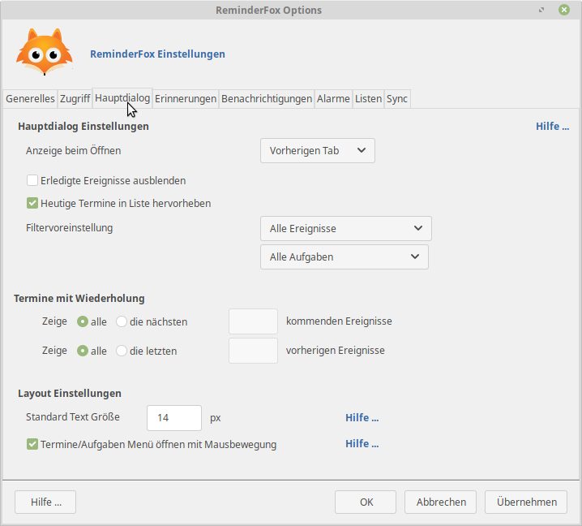

ReminderFox Menü Funktionen
Zur Bedienung der vielfältigen ReminderFox Funktionen stehen an unterschiedlichen Stellen Menüpunkt zur Verfügung. Teilweise können diese über die Einstellungen den Bedürfnissen des Benutzers durch ihn angepasst selbst werden.
ReminderFox Symbole auf dem Toolbar der Hostanwendung

Im Bild sind ReminderFox Symbole zu sehen (roter Rahmen). ReminderFox bietet verschiedene Symbole, die auf Toolbars installiert werden können:
- Kalender - Aufruf der Monatsübersicht (wie in der ReminderFox Liste mit markierten Tagen, die Termine haben) mit der Möglichkeit durch Auswahl eines Tages direkt einen neuen Termin/Aufgabe anzulegen.
- Tatzensymbol - öffnet eine Übersicht der anstehenden Termine und Aufgaben
- Schleife - öffnet den Dialog zum Anlegen eines neunen Termins mit der Vorbelegung des aktuellen Tages
- Uhr - öffnet den Dialog zum Anlegen eines 'Kurz'-Alarmes
Eine Anleitung zur Installation von Symbolen auf den Leisten siehe Siehe hier.
Statusbar Menü
Der Statusbar der Hostanwendung (Firefox, Thunderbird) wird benutzt zur Anzeige anstehender Termine, aber auch um andere Funktionen des ReminderFox aufzurufen:

Der obere Teil bietet Funktionen zum Aufruf des ReminderFox Dialoges, das Hinzufügen von Erinnerungen, die Sofort-Alarmfunktion und das Ein-/Ausschalten der Benachrichtigungen.
Die letzte genannte Funktion ist hilfreich, um Alarme oder das Benachrichtigungsfenster zu unterdrücken -- z.B bei Bildschirmpräsentationen. Das Inaktivschalten wird durch die graue Anzeige der Schrift und der Schleife sichtbar.
Der untere Teil bietet:
- Einstellungen (Optionen) - siehe Optionen
- Homepage besuchen - Aufruf zu ReminderFox im Internet http://reminderfox.mozdev.org/
- Hilfe - Direkter Aufruf zu diesen 'ReminderFox Info'
- Über ReminderFox ... - Mit diesem Aufruf werden nicht nur Informationen zu den Autoren usw. gegeben, sondern auch die Möglichkeit angeboten ein E-Mail zu schreiben, um Hilfe oder Vorschläge an die Autoren zu senden. Dabei werden Informationen über die ReminderFox Installation angefügt, was oftmals die Hilfe erleichert!
Einstellungen (Optionen)
Mit einer Reihe von Optionen kann ReminderFox entsprechend den Neigungen des Benutzers eingestellt werden.
Diese Optionen werden u.a. aufgerufen mit dem Kontextmenü auf dem ReminderFox Schleifen Symbol auf dem Statusbar.
Im folgenden werden die einzelnen Fenster/Tabulatoren dargestellt/besprochen.
Generelle Einstellungen

Speicherort für ReminderFox Dateien
Die Termine und Erinnerungen speichert Reminderfox in einer "ICS" Datei. Die individullen Einstellungen, also wie der Benutzer seinen Reminderfox handhabt, werden in einer weiteren Datei angelegt.
Der standardmäßige Ablageort der Dateien ist im Benutzerprofil. Die "ICS" Datei kann aber nach Belieben verschoben werden, hierfür ist die Eingabe im Bereich "Reminderfox Daten".
Wird "Standard" aktiert, so erfolgt die Speicherung im Benutzerprofil, sonst lässt sich ein beliebiger anderen Speicherplatz wählen.
Hinweis: Wird ReminderFox in mehreren Anwendungen (z.B. Firefox, Thunderbird) installiert, so können durch die Angabe derselben Datei dieselben Daten in allen Anwendungen genutzt werden.
Reminderfox Dateien Sicherung
Mit der Schaltfläche [Import/Export] öffnet sich ein zusätzliches Fenster. Dort können die "ICS" Termin/Aufgaben Daten sowie in einem extra Teil die Reminderfox Einstellungen importiert und exportiert werden.

- Termine und Aufgaben importieren/exportieren - Dies ist gedacht zur Datensicherung und zum Austausch mit anderen Kalenderprogrammen oder anderen Reminderfox Installationen, siehe auch Austauschen von Terminen und Aufgaben
Wichtig: Nach Aufruf [Importieren ..] wird gefragt, ob die neuen Daten hinzugefügt oder alle bestehenden überschrieben werden sollen. Das Exportieren betrifft alle vorhandenen Termine und Erinnerungen.
- Einstellungen importieren/exportieren - Dies ist zur Datensicherung des Bereiches 'Optionen/Einstellungen' gedacht. Eine andere Anwendung ist der Übertrag auf einen anderen Rechner mit ReminderFox, um dort die gleichen Einstellungen zu erhalten.
Kalender Grundeinstellungen
Kalender- und Datumsformate in der Liste, den Dialogen etc werden hier zentral eingestellt.
Sollen mehrere Monate im rechten Kalender dargestellt werden, so wird die Anzahl unter "Anzahl der Kalendermonate" angegeben, empfohlen sind drei.
System / Zugriff
Hauptdialog

- Anzeigeeinstellungen
- Heutige Termine in der Statusleiste anzeigen: aktiviert: Termine werden neben dem Schleifen-Symbol angezeigt.
- Bestimmen welche Liste (Termine oder Aufgaben) beim Klick auf das Schleifen-Symbol geöffnet wird.
- Platzierung der Anzeige
Festlegen an welcher Stelle das Schleifen-Symbol angezeigt wird (auf der Statusleiste, der Mailleiste, etc).
Auch die Position innerhalb der festgelegten Leiste lässt sich ändern:
- Immer zuletzt - das Symbol wird an der letzten Position auf der Leiste angezeigt
- Genaue Position - eine bestimmte Position, an der das Symbol auf der Leiste angezeigt wird.
Erinnerungen
Benachrichtigungen
Für jeden Termin oder jede Aufgabe kann eine 'Benachrichtigung' festgelegt werden. Diese Benachrichtigung wird entsprechend der eingestellten Zeit vor dem Termin als 'Benachrichtigungsfenster' angezeigt. (Siehe Eingabe von Terminen/Aufgaben) Diese Benachrichtigung wird wiederholt, bis sie abgeschaltet, der Termin gelöscht oder als erledigt markiert wird.

Mit diesem Tab 'Benachrichtigungen' kann das Verhalten der Benachrichtigungen eingestellt werden.
'Tooltip' ist ein Hinweisbereich, in dem laufende und kommende Ereignisse angezeigt werden. Die Anzeige der 'Tooltip' erfolgt unterschiedlich:
- periodisch nach einem einstellbaren Zeitabstand
- indem der Mauszeiger über das Schleifen-Symbol auf der Statusleiste geführt wird.
Mit den Optionen 'Tooltip' wird eingestellt, was wie angezeigt werden soll:
- Benachrichtigungen einblenden bestimmt, ob Hinweise erfolgen sollen oder nicht.
- Anzeigen bestimmt, was angezeigt werden soll:
>
[heutige und kommende],[nur heutige]oder[nur künftige]Termine > in welchem Minutentakt die Benachrichtigungen wiederholt werden sollen - Akustische Hinweise - Hier kann ein Klang gewählt werden, der zusammen mit der Anzeige abgespielt wird. Es kann der vom Betriebssystem vorgegebene Klang oder eine andere .wav Datei ausgewählt werden.
- Termine im Tooltip anzeigen - ist dies gewählt, werden heutige und kommende Termine im Tooltip angezeigt.
- Aufgaben im Tooltip anzeigen - ist dies gewählt, werden Aufgaben, die so markiert sind, im Tooltip angezeigt.
- Um die Anzeige übersichtlich zu halten, wird eine entsprechende Anzahl von Tagen gewählt, für die die Ereignisse gezeigt werden sollen.
- Darstellung - Die Tooltip Beschriftung für heutige und künftige Termine lässt sich hier einstellen. Mit der Taste [Anpassen] wird eine Liste der möglichen Einstellungen angezeigt. Diese sind in das Eingabefeld "Darstellungsformat" wie gewünscht zu übertragen.
So z.B. ergibt diese Eingabe [shortDay] [date].[shortMonth]: [reminderDesc] ([time])
die folgende Anzeige: Di 21.Jun: Treffen mit Schmidt (14:30).
Ebenso kann die Anzahl der Tage bis zum Termin angegeben werden: [shortDay] [date].[shortMonth]: [reminderDesc] ([time]) -- in [daysUntil] Tagen
Dies ergibt: Di 23.Jun: Timmy's Geburtstag -- in 4 Tagen
Hinweis: Leerzeichen und andere Zeichen werden wie angegeben übernommen!
Alarme
Listen
Neben 'Terminen' und 'Aufgaben' bietet Reminderfox die Anlage individueller 'Listen'.
Diese Listen könnten beinhalten: Projektereignisse, Filmlisten/Alben (mit Erscheinungsdatum),
Einkaufslisten oder was auch immer in einer Liste zusammen gefasst werden kann.
Dies ist für Leute gedacht, die gerne mit Listen arbeiten.
Individuelle Listen sind identisch zur Aufgabenliste. Somit gelten alle Optionen und Einstellungen genauso. Mit dem Kontextmenü können Einträge sowohl innerhalb einer Liste als auch in jede andere Liste verschoben werden.

In diesem Tab erfolgt die Verwaltung der individuellen Listen.
Mit dem Aufruf werden die Namen der bereits vorhandenen Listen angezeigt. Über die Schaltflächen ist ein Bearbeiten der Listen möglich:
- Mit [Hinzufügen] wird ein Dialog geöffnet (siehe nächster Abschnitt 'Subscription'), mit dem eine neue Liste angelegt wird. Der Name für diese Liste lässt sich frei wählen, er dient auch zur Benennung des Tab in der Reminderfox Liste.
- [Bearbeiten] ermöglicht nur den Name einer bestehenden Liste zu ändern.
- Listen löschen erfolgt nach dem Aktivieren der Zeile mit dem Listennamen und der Taste [Entfernen].
Hinweis: Damit werden auch alle Einträge dieser Liste gelöscht! - Die Listenreihenfolge kann geändert werden durch die Tasten [Nach oben] und [Nach unten].
Sync (Netzwerk / Remote Kalender)
Siehe auch: Austauschen von Terminen und Aufgaben.

- Synchronisations-Adresse - Das erforderliche Protokoll (http/https/ftp) wird aus dem Menü ausgewählt und die Adresse im vorgesehenen Feld eingegeben. Wichtig ist, dass die Adresse mit einem Dateinamen endet. Außerdem wird der Benutzername und das Passwort zum Zugriff auf den Server eingeben. Dann [Importieren] auswählen, um Daten vom Server zu laden oder [Exportieren], um sie auf den Server zu schreiben.
- Automatische Synchronisation Hiermit wird bestimmt, dass ReminderFox die Synchronisation selbstständig vornimmt.
Kategorien
Kategorien sind ein Mittel die Termine und Aufgaben in gewünschte Sachgruppen zusammenzufassen. So ist es leicht möglich in den ReminderFox Listen die Termine und Aufgaben nach diesen Begriffen zu filtern.
Das Bearbeiten der 'Kategorien' erfolgt im Bereich Optionen/Einstellungen mit dem Tab 'Kategorien'.

Unterschieden werden 'Standard Kategorien' und 'Andere Kategorien':
- Standard-Kategorien - oder häufig verwendete: sie stehen bei der Bearbeitung von Terminen und Aufgaben für das Eingabefeld Kategorie über eine Menüschaltfläche zur Verfügung.
Hier in den Optionen lassen sich die Standard-Kategorien mit [Hinzufügen], [Bearbeiten], [Löschen] bearbeiten oder für die Kategorie-Menüauswahl in der Reihenfolge verschieben.
- Andere Kategorien sind solche, die in den gespeicherten Terminen und Aufgaben vorkommen, aber nicht als 'Standard' definiert sind. Mit dem Menüpunkt [Andere Kategorien ...] wird die Liste dieser vorhandenen Kategorien aufgerufen. Von dort können Einträge zu den Standard-Kategorien verschoben werden. So läßt sich eine individuelle Liste mit 'Standard-Kategorien' zusammenstellen.